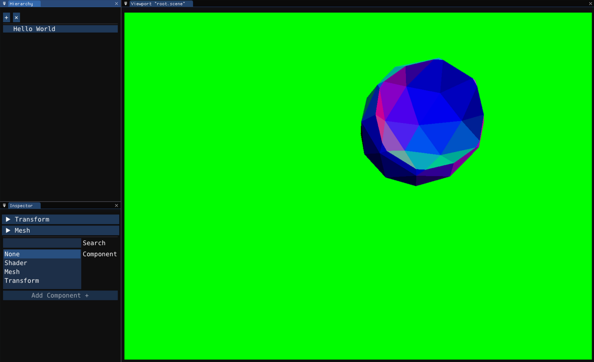
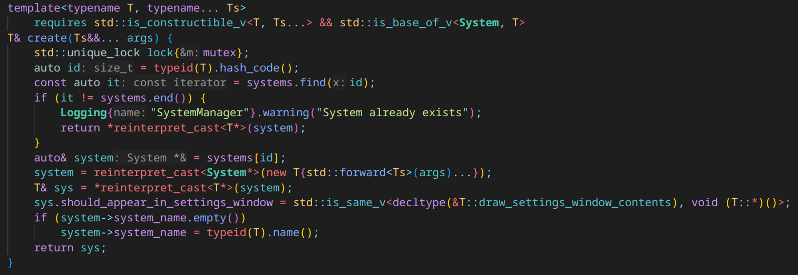
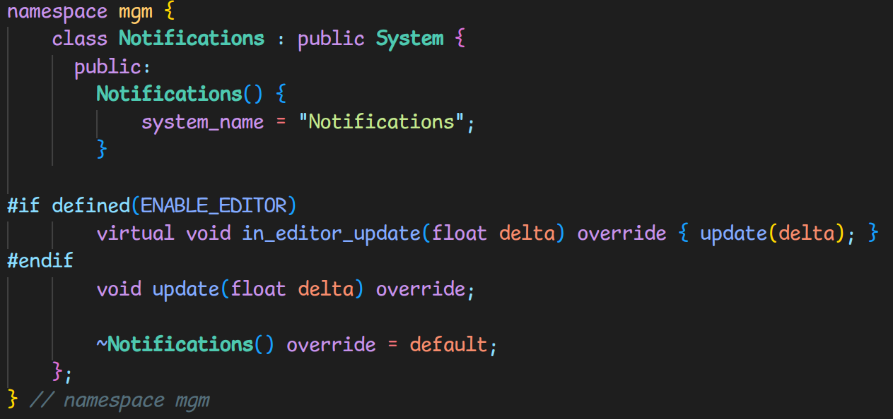
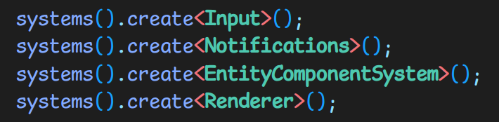
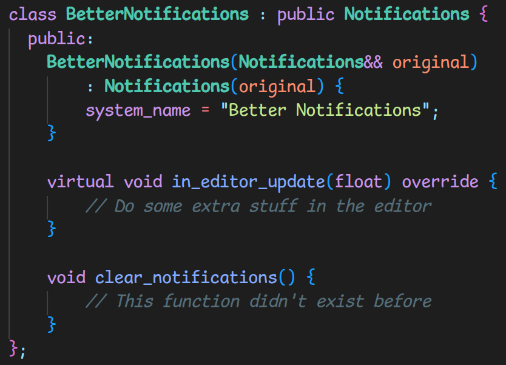
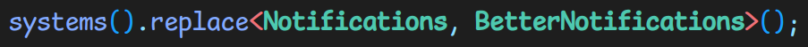
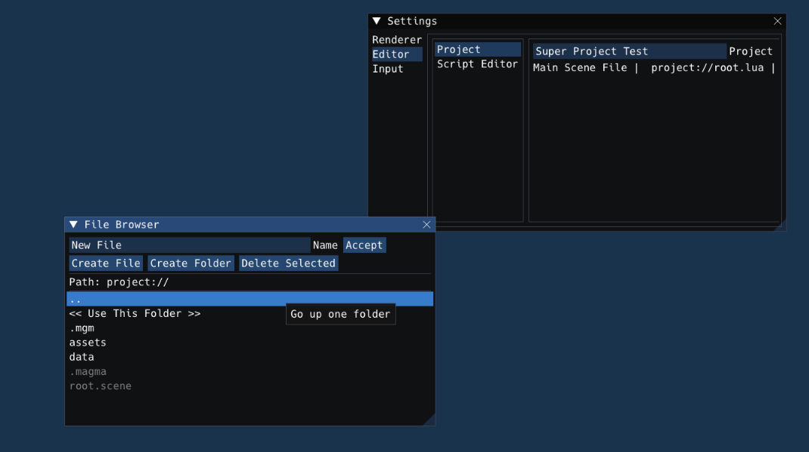
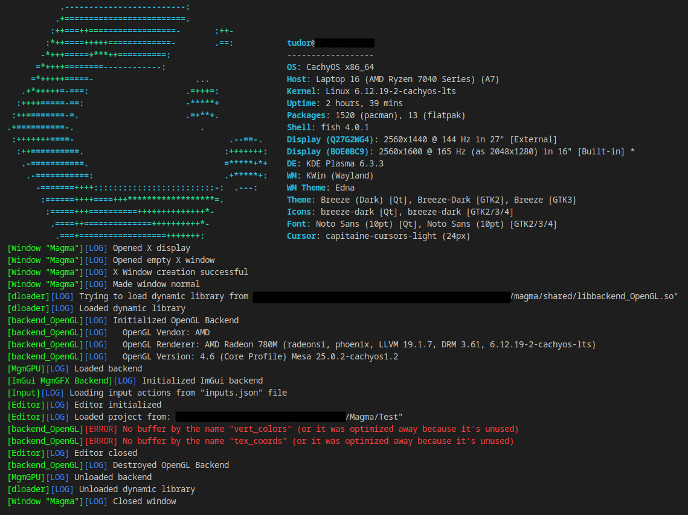
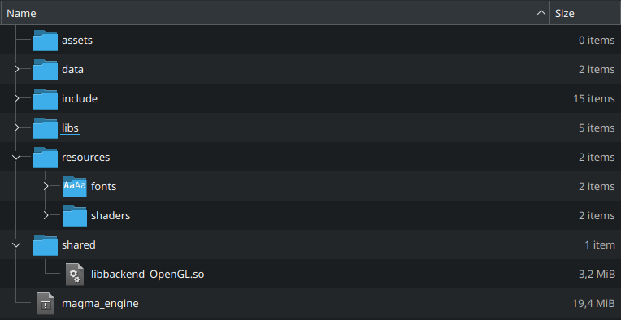

Magma Engine
Magma Engine is a custom game engine written in C/C++. It uses ImGui for the editor interface, which makes it extendable with custom plugins and add-ons.
Powering the engine is the SystemManager, designed to allow adding or modifying systems within the engine. The main systems are:

SystemManager
The SystemManager requires that systems added to it inherit publicly from the System class.
In the background, on the most basic level, it just adds the system to a vector of System base pointers. It's made to handle boilerplate, utilities and other quality-of-life features for systems, like multithreading or setting up the first layer of reflection that the engine provides.
The SystemManager does more than just list systems. It can also handle more advanced behaviors like Replacing Systems.

System Class
Creating a system, the class just needs to inherit from the System class and implement a default constructor. Optionally, each of the special system functions (update, begin_play, end_play etc) can be overwritten to add functionality.


Replacing Systems
Replacing systems is simple. It only requires that the replacement inherits from the original, and that it implements a conversion move constructor.
Existing functions can be overwritten and new functions can be added, and accessing the system is done the same way as normal systems.


Editor

Editor Windows
Magma has an API for creating custom editor windows, allowing users to extend the editor interface as needed.

Multi-Platform
Multi-platform support ensures that Magma works on both Windows and Linux. Porting it to other platforms is easy thanks to its modularity.

Backend
The engine's backend is abstracted and easily replaceable. For example, changing the graphics/compute backend is as simple as swapping out the backend library.
